锂聚合物电池，通常被简称为锂电池。具有高能量密度、高放电效率和重量较轻等特点。是航模界动力电池的首选。
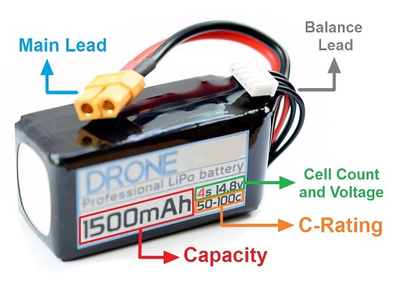
电池电压
航模上用的锂电池通常是由好几块独立的电池单元串起来的。每一电池单元具有3.7v的额定电压，因此业界通常用电池单元数量来描述电池电压。比如4S的电池就是由4个电池单元串联起来的动力电池，而它的额定电压就是 3.7v * 4 = 14.8V。
1S = 1 cell = 3.7V
2S = 2 cells = 7.4V
3S = 3 cells = 11.1V
4S = 4 cells = 14.8V
5S = 5 cells = 18.5V
6S = 6 cells = 22.2V
正如前面说过，无刷电机的转速直接受电池电压的影响，所以很多玩家在电机和电调允许的情况下尽量选择电压高的电池来获得更好的动力。但是同样mah的电池，如果电压越高，它的重量也毕竟越重，这也是一个取舍。
电池的设计电压范围一般为3v到4.2v。如果放电到3v一下的话就会对电池性能产生不可逆的影响，甚至会彻底毁坏电磁。而充电超过4.2v的话就会比较危险，甚至引起自燃。出于上述原因，一般建议单元电池降到3.5v的时候就要准备把飞机降落了，以免对电池产生损伤。也就是说对于3S的锂电池，最大充电电压是12.6v，而放电到10.5v的时候就准备降落。
电池容量
锂电池的容量是用毫安时（mAh）来表示的。mAh指的就是电池如果以这个电流来放电，刚好能用一个小时。
举个栗子，一块1300mAh的锂电池，如果用1.3A的电流来放电的话，那么一个小时候这块电池刚好用完。如果用。2.6A的电流来放电的话，那么半个小时后这块电池就就被用完了。
增加电池的容量可以让续航时间更长，但是也会增加电池的重量。要灵活性还是要续航这还是一个权衡。
C系数
一般情况下无人机的锂电池都会标有一个C系数，如果知道C系数和电池容量的话，我们就能理算理论上的最大的安全且可持续的放电电流。 $$ Maximum Discharge Current = C-Rating * Capacity $$ 如果是1300mAh 50C的电池的话，那么这块电池可以以65A持续放电而不至于将电池损坏。
一些电池会标有两个C值，一个是持续的放电C，另外一个是瞬间的放电C。瞬间放电C允许在一段很小时间内以改值计算出来的最大电流来放电（比如10s）。
如果C太小的话，无人机就会显得不那么跟手。但是如果C过于大超过了你所需的放电电流的后，那也不会再对无人机的性能有任何改善了，而相反大C一般意味着更重的电池和更短的飞行时间。所以说，合适就好。
放电头
所有2S及以上的锂电池都会引出两组连接线：放电头和平衡头。放电头端子的种类还是挺多的，主要是形状、重量和电流的区别。
根据经验，你选择的放电头的端子应该和你的无人机上所需要的相匹配。如果你还没有无人机，那就选一种放电头，并且坚持用它。（换放电头类型这种事是十分吃力不讨好的）。
1S电池的放电头
1S电池的放电头一般都很小，且额定电流也很低。他们通常应用在有刷的迷你四轴上。
| LOSI | 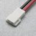 | |
| Pico blade | 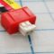 | |
| JST-PH | 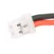 |
2S-6S电池的放电头
这个级别的放电头就多了。对于穿越机来说目前最流行的的应该就是XT60的端子了。然而XT60的额定电流是60A，而穿越机所需的电流和电压将越来越高，在不就的将来我们应该能看到有其他端子流行起来吧。
| JST | 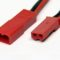 | 主要用于2S |
| XT30 | 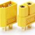 | 主要用于2S和3S |
| XT60 | 跟上图差不多，只是更大些 | 主要用于3S和4S |
| XT90 | 跟上图差不多，只是更大些 | |
| HXT-4mm | 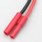 | |
| EC3 | 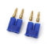 | |
| EC5 | 跟上图差不多，只是更大些 | |
| Deans (T) | 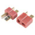 |
平衡头
平衡头主要是充电时用于平衡每块单元电池的，以确保所有的单元电池的电压都相等。当然我们也可以用它来测量每个电池的电压。
2S的锂电池的平衡头有三根线，而多一个S相应的线也会多一根。
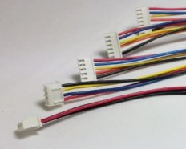
内阻
每个电池单元都会有内阻，而且每个电池单元内的内阻可能不是完全一致的。内阻过高会导致电池内部发热增大，这就限制了最大放电电流。这就是为什么当锂电池老化或者过度使用后会变得疲软而没有动力。
电池内阻不是一致不变的，它会随着时间、撞击、过放、过热等其他不利因素的影响而变化。你可以利用一些测量内阻的工具对电池内阻进行测试。
参考原文：https://oscarliang.com/lipo-battery-guide/
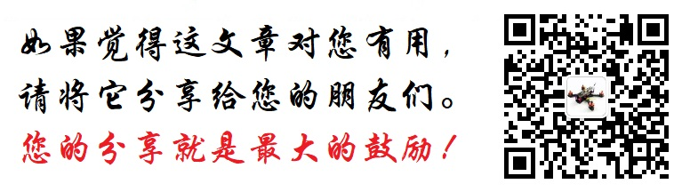
Comments
There are no comments yet.